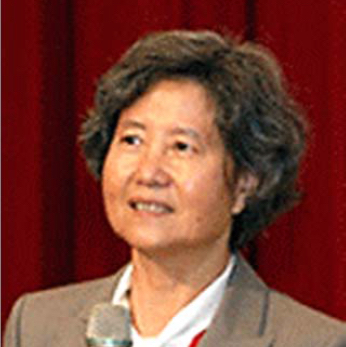

<div class="container">
    <div class="row">
        <div id="speaker-detail" class="col-lg-6 col-lg-offset-3">
            <div class="row">
                <button title="Close (Esc)" type="button" class="mfp-close">×</button>
                <div class="col-md-4 col-lg-4">
                    
                    <br />
                </div>
                <div class="col-md-8 col-lg-8">
                    <h2>Jane H. Hsiao, Ph.D., M.B.A.<br>許照惠 博士</h2>
                    <h3>Vice Chairman and Chief Technical Officer,Opko Health, Inc.</h3>
                    <p>Dr. Hsiao is co-founder of OPKO Health, Inc. and has served as Vice Chairman and Chief Technical Officer since May 2007. She was a co-founder of IVAX Corporation in 1986 served as its Vice Chairman and Chief Technical Officer from July 1996 to January 2006, when Teva acquired IVAX. Dr. Hsiao has been a Director of Cocrystal Pharma, Inc. since January 2, 2014 and TransEnterix since August 2014. Dr. Hsiao is on the board of several public companies since 2007.</p>
                    <p>Dr. Hsiao received a B.S. degree in Pharmacy from the National Taiwan University and a Ph.D. degree in Medicinal Chemistry from the University of Illinois, Chicago in 1973. She also holds an M.B.A. degree. Dr. Hsiao’s background in pharmaceutical chemistry and strong technical expertise, as well as her senior management experience, allow her to play an integral role in overseeing OPKO’s product development and regulatory affairs and in navigating the regulatory pathways for OPKO’s products and product candidates. In addition, as a result of her role as director and/or chairman of other companies in the biotechnology and life sciences space, she also has a keen understanding and appreciation of the many regulatory, product development and manufacturing compliance issues confronting the pharmaceutical and biotechnology industries.</p>
                </div>
            </div>
        </div>
    </div>
</div>
